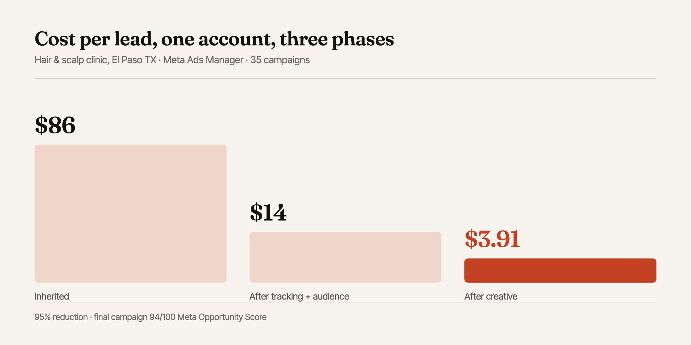

How I Cut a Cost Per Lead From $86 to $3.91
A US hair clinic came to me paying $86 for every lead on a $50/day budget. Thirty-five campaigns later it was $3.91. Here is the actual order I changed things in: including the two rounds that didn't work.
Where these numbers come from
Every figure here is pulled from one Meta Ads Manager account I managed directly between 2024 and 2025 for a hair and scalp clinic in El Paso, Texas. Screenshots are in the full case study. The client's name is used with permission; individual campaign names are not shown. This is one account in one niche: treat the method as transferable and the exact numbers as not.
When this account landed on my desk it had already been running for months. The clinic was spending about $50 a day and getting leads, so nothing looked catastrophic from the outside. The problem was the arithmetic: at $86 per lead, and with a realistic close rate on cosmetic scalp treatments, they were spending more to acquire a customer than that customer was worth in their first booking.
That's the situation most "our ads don't work" accounts are actually in. The ads work. They just cost too much.
First: work out what a lead is allowed to cost
Before touching anything in the account I asked for two numbers: average value of a first booking, and roughly what share of enquiries turn into a booking. That gives you a ceiling. Everything after that is a question of whether you can get under it.
This step gets skipped constantly, and it's why so many accounts get optimised toward the wrong thing. A $40 cost per lead is excellent for a business closing $3,000 contracts and fatal for one selling a $60 treatment. Published benchmarks are useful as a sanity check (reported Meta cost-per-lead averages for healthcare sit in the region of $40, with wide variance by sub-vertical and methodology [1]) but a benchmark can't tell you what your margin can absorb. Only your own numbers can.
For this clinic the ceiling worked out well under $86. So the target wasn't "improve performance." It was a specific number we had to get beneath for the channel to stay switched on at all.

Second: fix the tracking, before optimising anything
The account was running on browser-side Pixel events only. That matters more than it used to. Since Apple's App Tracking Transparency changes, a meaningful share of conversions never make it back to Meta through the browser alone, which means the delivery algorithm is optimising against an incomplete picture of who actually converted.
So the first real change was implementing the Conversions API alongside the Pixel, with event deduplication so the same lead isn't counted twice.
This is the least glamorous step and the one that does the most work. You are not making the ads better. You are making the machine that optimises the ads less blind. Every audience and creative test after this point produced cleaner signal than it would have otherwise, and I'd argue the later gains were only possible because this came first.
If you do one thing
Check whether your Conversions API is actually firing and deduplicating, not just installed. In Events Manager, a healthy setup shows both browser and server events for the same action with matched event IDs. A lot of accounts have CAPI "set up" in a way that quietly does nothing.
Third: kill the broad audience assumption
The inherited setup leaned on broad targeting and let Meta figure it out. That advice is everywhere now, and on a large budget with strong signal it's often right. On $50 a day it is not, because you never accumulate enough conversions per ad set for the algorithm to exit the learning phase and find the pocket of people who actually convert.
What I ran instead, across the first block of tests:
- Tight interest stacks built around hair loss, scalp conditions and adjacent cosmetic treatments, rather than one wide net
- Geographic narrowing to a realistic drive radius. This is a clinic, someone in another state is not a lead
- Lookalikes off actual converters, not off page engagers, once the CAPI data had built up enough of a source list
- Placement restriction, cutting the placements that were absorbing budget without producing enquiries
That first block took the cost per lead from $86 to roughly $14.
What didn't work
Two things, worth saying plainly because case studies tend to present a straight line.
Aggressive budget scaling on the first winner. As soon as an ad set showed a good cost per lead I pushed budget hard. Performance degraded almost immediately. The ad set re-entered learning, and the cost per result went back up before it came down. Scaling in smaller increments, and waiting for stability between them, held the number far better.
Assuming the winning creative would keep winning. It didn't. On a tight local audience you exhaust the addressable pool quickly and frequency climbs. The same ad that produced $14 leads in week two was producing noticeably worse ones by week five, not because the creative got worse but because the same people had seen it too many times.
Fourth: iterate creative against the objection, not the product
The step from $14 to $3.91 was mostly creative, and the shift that mattered was in what the ads talked about.
The inherited ads described the treatment. The ads that worked addressed the hesitation. Cost, discretion, whether it works for your particular kind of hair loss, what actually happens at the first appointment. In a category people are quietly self-conscious about, the barrier isn't ignorance of the service. It's the awkwardness of enquiring.
Across 35 campaigns I tested combinations of angle, format and audience, kept what held its cost per lead over a full week rather than a good day, and moved budget toward it steadily. The final active campaign settled at $3.91 per lead with 27 website leads and a 94/100 Meta Opportunity Score.
| Phase | Main change | Cost per lead |
|---|---|---|
| Inherited | Broad targeting, Pixel only | $86 |
| Phase 1 | Conversions API, tight audiences, placement control | ~$14 |
| Phase 2 | Objection-led creative, steady scaling of winners | $3.91 |
Why the number went down, in one sentence
Better signal into the algorithm, a narrow enough audience for a small budget to actually learn, and creative aimed at the reason people hesitate rather than at the service being sold.
None of those three is a trick. The reason a 95% reduction was available at all is that the starting point had a fixable tracking problem and inherited targeting nobody had revisited. That is a very common starting point.
What this doesn't mean
It doesn't mean $3.91 is achievable in your account. This was a local service business with a tightly definable audience and a genuine emotional hook. A B2B SaaS account selling into a small, expensive market has none of those advantages, and a good cost per lead there might be fifty times higher and still profitable.
What does transfer is the order of operations: establish your ceiling, fix measurement, narrow before you broaden, and test creative against objections. I have run that sequence on accounts in four countries and it has never been the wrong place to start.
All the numbers in this post, with spend and sample size for each account: the full cost-per-lead benchmark set.
Related reading
- Ranking a medical clinic on Page 1 in three months
- Why click-to-Messenger beats conversion ads in Bangladesh
Want to know what your account is actually leaking?
Send me your ad account and I'll run the same first pass on it (tracking, audience structure, creative angles) and tell you what I'd change first. No cost.
Get a free audit →Sources & further reading
- Adamigo, Meta Ads Cost Per Lead Benchmarks by Industry (2026): used only as a directional cross-check; aggregated benchmark figures vary widely by methodology and lead definition.
- Meta for Developers, Conversions API documentation: server-side event setup and deduplication.
- Primary data: Meta Ads Manager, client account managed by the author, 2024–2025. Screenshots in the Scalp Shop case study.